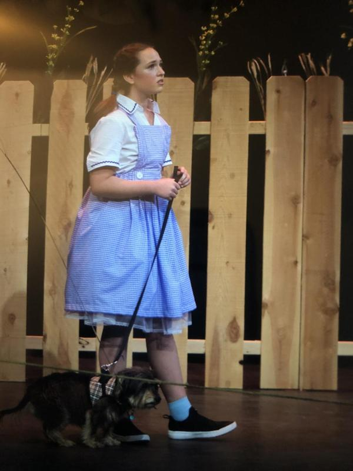

Theatre helps me be an organized person. Every time I am given a script, I have to not only memorize my lines but think deeply on how to portray my character. This influences me as a student because I expands my tool box for analyzing how the characters in my Literature classes are feeling. This is also why I am particularly excited to do Shakespear this year.
This is me playing Dorothy in my first big production, The Wizard Of Oz, with my co-star Lux (Toto).

This is me portraying the Doctor in Matilda, acting alongside my best friends Stella (Mr.Wormwood) and Jolene (Mrs. Wormwood).
Home Page